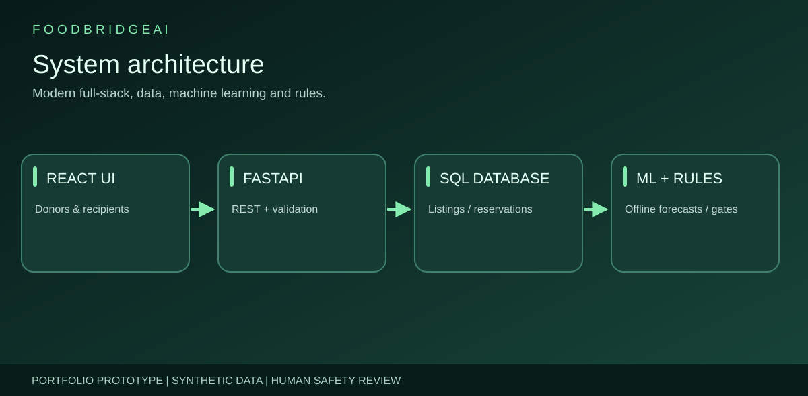
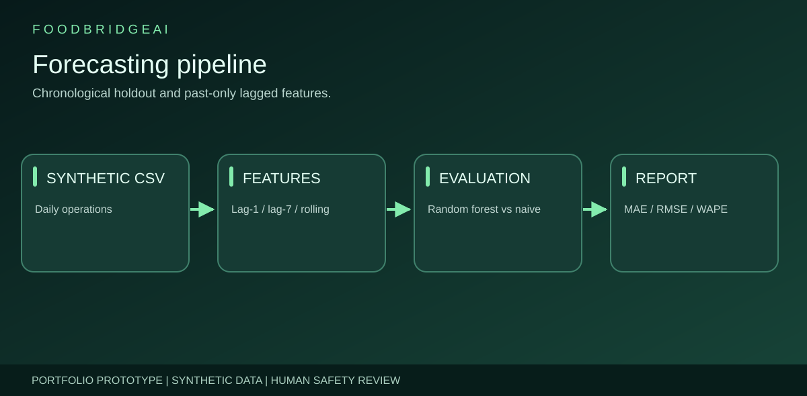
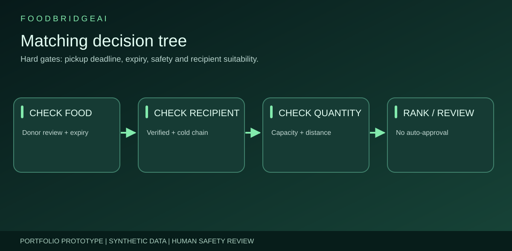
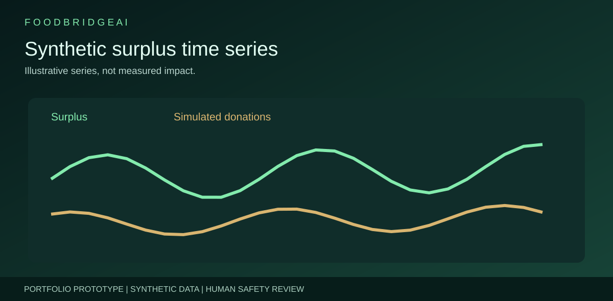
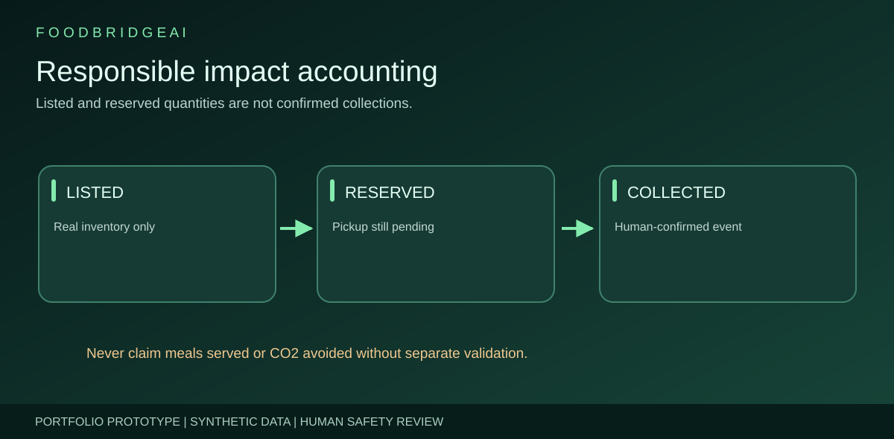

Less waste.
More community impact.
An educational platform that explores surplus forecasting, safe-rule recipient eligibility, transparent reservations and accountable collection reporting.
PythonFastAPISQLReactMachine LearningDockerThe challenge
Operational food surplus needs reliable prediction and coordination without confusing forecasts with actual stock.
What I built
An API-driven dashboard, offline forecasting experiment, inventory controls, recipient screening and collection lifecycle.
Engineering principle
Human confirmation remains mandatory. Donor, recipient and historical records are synthetic examples.
System design and outcomes






Technical highlights
Time-aware ML
Lag-only features and chronological holdout, evaluated against a seasonal-naive baseline on fictional history.
Inventory integrity
Atomic conditional reservation, cancellation releases stock, collection requires explicit human confirmation.
Responsible design
Distinct forecast/listed/reserved/confirmed metrics, no implied verified food-safety or charity partnerships.
Review the source
This is a runnable local demonstration, not a deployed public charity service. Real deployment needs production identities, safety processes, live-data validation and security controls.
View GitHub projectSafety and limitations